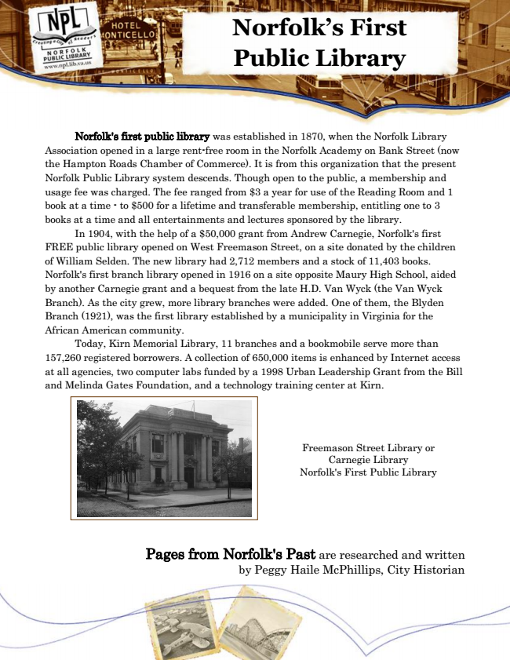

Norfolk’s First Public Library
Norfolk's first public library was established in 1870, when the Norfolk Library Association opened in a large rent-free room in the Norfolk Academy on Bank Street (now the Hampton Roads Chamber of Commerce). It is from this organization that the present Norfolk Public Library system descends. Though open to the public, a membership and usage fee was charged. The fee ranged from $3 a year for use of the Reading Room and 1 book at a time - to $500 for a lifetime and transferable membership, entitling one to 3 books at a time and all entertainments and lectures sponsored by the library.
In 1904, with the help of a $50,000 grant from Andrew Carnegie, Norfolk's first FREE public library opened on West Freemason Street, on a site donated by the children of William Selden. The new library had 2,712 members and a stock of 11,403 books. Norfolk's first branch library opened in 1916 on a site opposite Maury High School, aided by another Carnegie grant and a bequest from the late H.D. Van Wyck (the Van Wyck Branch). As the city grew, more library branches were added. One of them, the Blyden Branch (1921), was the first library established by a municipality in Virginia for the African American community.
Today, Kirn Memorial Library, 11 branches and a bookmobile serve more than 157,260 registered borrowers. A collection of 650,000 items is enhanced by Internet access at all agencies, two computer labs funded by a 1998 Urban Leadership Grant from the Bill and Melinda Gates Foundation, and a technology training center at Kirn.
Pages from Norfolk's Past are researched and written by Peggy Haile McPhillips, City Historian
Freemason Street Library or Carnegie Library Norfolk's First Public Library